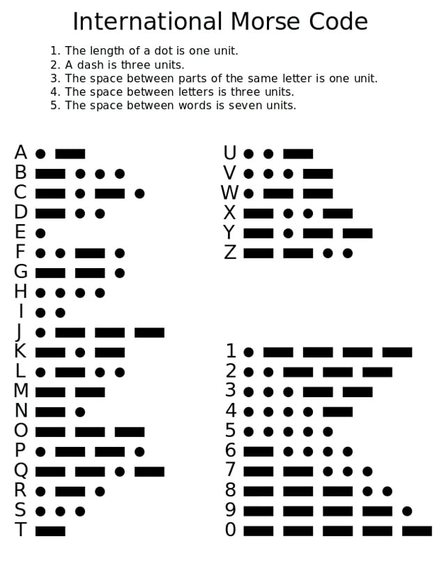

MẬT THƯ ★
TRẠM 2: TRÍ TUỆ TUỔI TRẺ (10 điểm)
Yêu cầu:
Đây là một Khẩu hiệu hành động của đoàn viên. Bạn hãy nhấn chọn audio để nghe, tra cứu bảng mã Morse bên dưới để giải mã nội dung; Nhập câu trả lời vào
App hệ thống
để hoàn thành Trạm 2 + Nhận manh mối 2.
🔊 NGHE MẬT MÃ MORSE
Trình duyệt của bạn không hỗ trợ phát âm thanh.
📜 BẢNG TRA CỨU QUỐC TẾ
